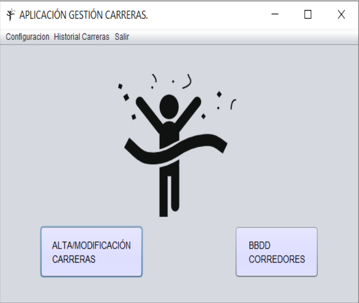

En esta ventana usted podrá gestionar las carreras o la base de datos de corredores.
Pulsando F1 en la ventana principal, se abrirá esta página de ayuda.
La ventana tiene un boton para abrir una ventana secundaria, que tambien tiene su propia página de ayuda.